继监督学习之后，应用最广泛的机器学习形式就是无监督学习。00:03
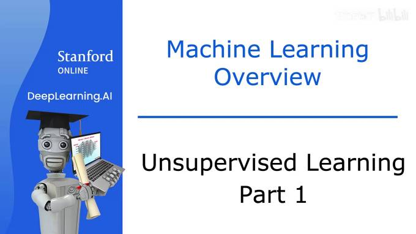
让我们来看看这意味着什么。00:09
我们已经讨论过监督学习，而这个视频是关于无监督学习的。00:12
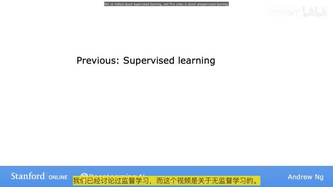
但别让无监督这个名字误导了你。00:17
我认为无监督学习和监督学习一样棒。00:21
回想上一视频中我们看到的监督学习，它看起来像这样。00:26
在分类问题中，每个示例都关联着一个输出标签 Y，比如良性或恶性，用圆形和叉号表示。00:32
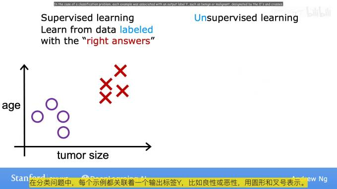
在无监督学习中，我们得到的数据不关联任何输出标签 Y。00:43
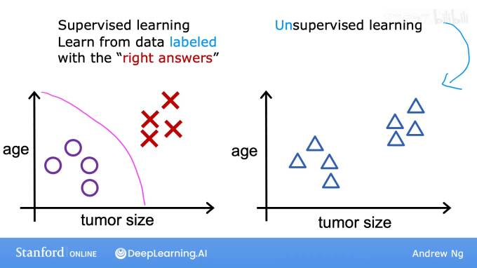
假设给你一组患者的数据，包括他们的肿瘤大小和年龄，但并没有标明肿瘤是良性还是恶性。00:51
所以数据集看起来像右边这样。01:01
我们没有被要求判断肿瘤是良性还是恶性，因为数据集中没有提供任何标签 Y。01:05
相反，我们的任务是找到数据中的某些结构、某些模式，或者只是发现数据中有趣的东西。01:15
我们称之为无监督，是因为我们并不试图监督算法去为每个输入提供所谓的正确答案。01:27
相反，我们要求算法自己去弄清楚这些数据中可能存在什么有趣的东西，或什么模式、什么结构。01:36
对于这个特定的数据集，一个无监督学习算法可能会判定这些数据可以被划分为两个不同的组，或者说两个不同的簇。01:46
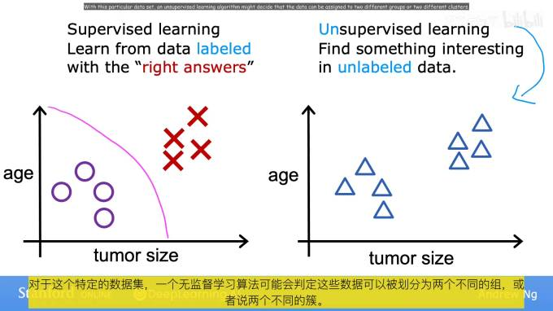
因此它可能会判定这里有一个簇或组，而这里有另一个簇或组。01:58
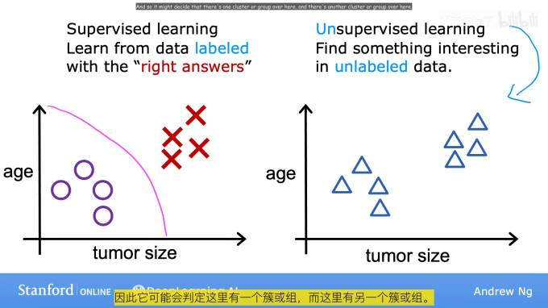
这是一种特殊类型的无监督学习，称为聚类算法，因为它将未标记的数据划分到不同的簇中。02:09
事实证明，这被应用于许多场景。02:19
例如，聚类被应用于 Google News。02:22
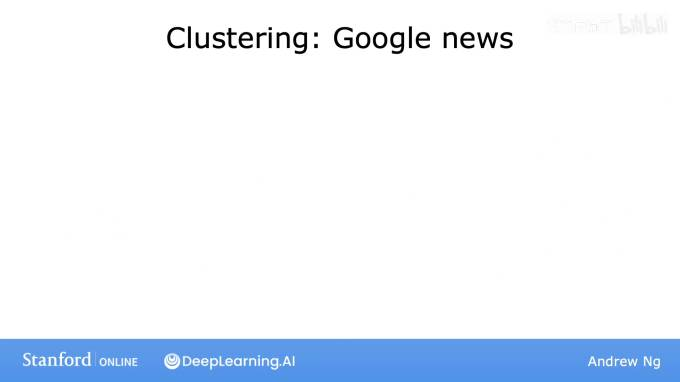
所做的是，每天浏览互联网上成千上万篇新闻文章，并将相关的报道分组在一起。02:28
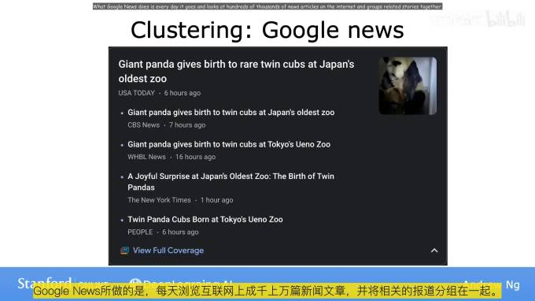
例如，这是来自 Google News 的一个样本，其中头条新闻的标题是：大熊猫在日本最古老的动物园产下红色双胞胎幼崽。02:37
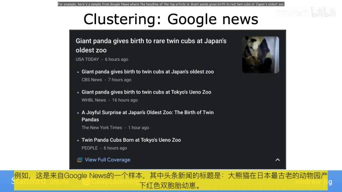
这篇文章确实引起了我的注意，因为我的女儿喜欢熊猫，所以我家里有很多熊猫玩具，也会看很多熊猫视频。02:50
看到这个，你可能会注意到在这条新闻下面还有其他相关的文章。03:01
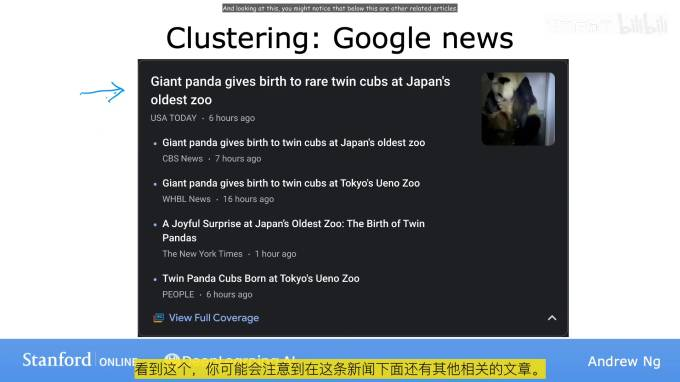
仅从标题来看，你就可以开始猜测聚类算法可能在做什么了。03:09
注意，熊猫这个词出现在这里、这里、这里、这里还有这里。03:14
并且注意，双胞胎这个词也出现在所有五篇文章中，动物园这个词同样出现在所有这些文章中。03:24
因此，聚类算法会从当天互联网上成千上万篇新闻文章中找出那些提到相似词语的文章，并将它们分组到不同的簇中。03:35
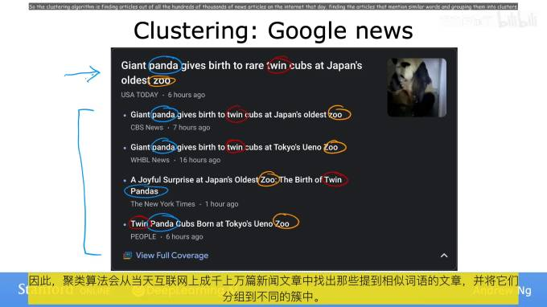
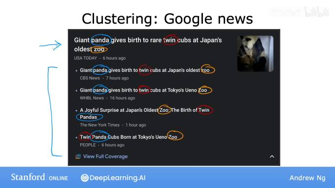
很酷的一点是，这个聚类算法靠自己就能弄清楚哪些词语表明某些文章属于同一组。03:48
我的意思是，并没有一个 Google News 的员工告诉算法去找包含熊猫、双胞胎和动物园这些词语的文章，然后把它们放到同一个簇里。03:57
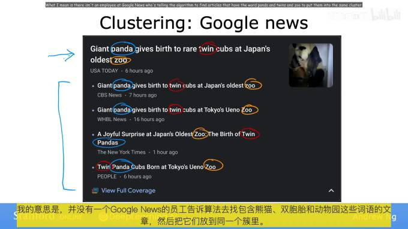
新闻话题每天都在变化，而且新闻故事数量众多，让人每天为新闻所涵盖的所有话题都这样做是不可行的。04:09
相反，算法必须无监督地靠自己弄清楚今天的新闻文章有哪些聚类。04:20
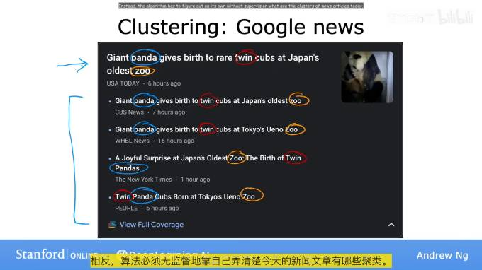
这就是为什么这种聚类算法是一种无监督学习算法。04:29
让我们看第二个例子，该例子将无监督学习应用于聚类基因或 DNA 数据。04:35
这张图展示的是 DNA 微阵列数据的图片。04:43
它们看起来像电子表格中的微型网格，每一个微小的列代表一个人的基因或 DNA 活动情况。04:47
例如，这里的整个一列来自一个人的 DNA，而另一列来自另一个人。04:58
每一行代表一个特定的基因。05:07
举个例子，也许这一行代表一个影响眼睛颜色的基因，或者这一行代表一个影响人身高的基因。05:10
研究人员甚至发现，一个人是否不喜欢某些蔬菜（如西兰花、抱子甘蓝或芦笋）也存在基因关联。05:22
所以，下次有人问你为什么不吃完沙拉时，你可以告诉他们，哦，也许是基因的原因。05:32
对于 DNA 微阵列，其思路是衡量每个个体的某些基因的表达程度。05:40
因此，这些颜色，红色、绿色、灰色等等，显示了不同个体是否拥有特定基因活跃表达的程度。05:48
然后你可以运行聚类算法，将个体分组到不同的类别或不同类型的人群中。05:58
比如，也许这些个体被分在一起，我们姑且称之为类型一。06:08
而这些人被归为类型二，这些人被归为类型三。06:15
这是无监督学习，因为我们没有提前告诉算法存在具有某些特征的类型一的人，或具有某些特征的类型二的人。06:24
相反，我们所说的是，这里有一堆数据。06:36
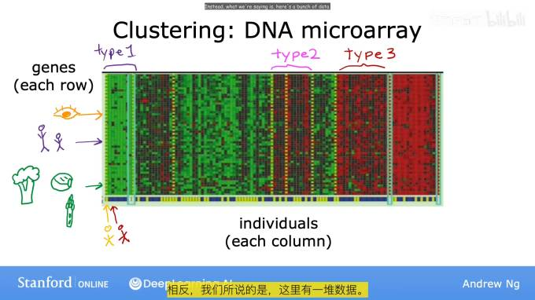
我不知道不同类型的人是什么样的，但你能自动找出数据中的结构吗？06:40
并自动找出个体有哪些主要类型。06:46
由于我们没有提前为示例提供正确答案，这就是无监督学习。06:50
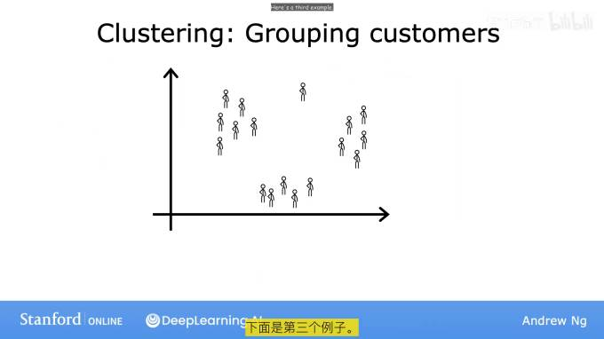
许多公司都拥有庞大的客户信息数据库。07:00
有了这些数据，你能自动将客户分组到不同的细分市场中，以便更高效地服务你的客户吗？07:04
具体来说，deeplearning.ai 团队做了一些研究，以更好地了解 deeplearning.ai 社区，以及为什么不同的人会参加这些课程、订阅每周快讯，或参加我们的 PINAI 活动。07:14
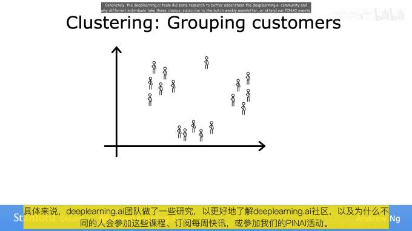
让我们将 deeplearning.ai 社区直观地看作这样一群人。07:31
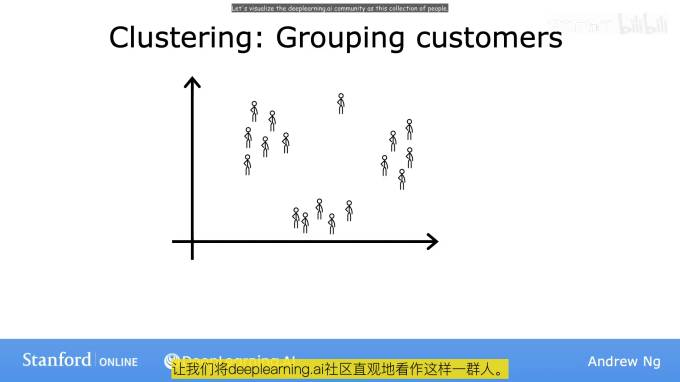
运行聚类算法，也就是市场细分，发现了几个不同的群体。07:38
一个群体的主要动机是寻求知识以提升自身技能。07:46
也许这就是你，如果是这样，那很棒。07:52
第二个群体的主要动机是寻找发展职业生涯的途径。07:57
也许你想获得晋升，找一份新工作，或者取得一些职业进展。08:01
如果这描述的是你的情况，那也很棒。08:08
还有一个群体希望了解人工智能如何影响他们的工作领域。08:11
这是我们的团队用来尝试更好地服务社区的聚类结果，我们试图弄清楚 deeplearning.ai 社区中学员的主要类型有哪些。08:20
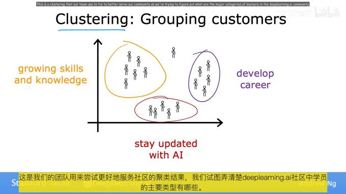
因此，如果这些中的任何一个是你学习的主要动力，那都很棒。08:32
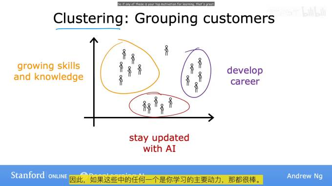
我希望能在你的学习旅程中帮助你。08:38
或者，万一这是你的情况，而你想要的与其他三个类别完全不同，那也没关系。08:42
我想让你知道，我同样爱你们。08:49
总结一下，聚类算法（无监督学习算法的一种）接收没有标签的数据，并尝试自动将它们分组到。08:53
所以，下次你看到或想到熊猫时，也许你也会想到聚类。09:04
除了聚类，还有其他类型的无监督学习。09:11
让我们继续看下一个视频，了解其他类型的无监督学习算法。09:16